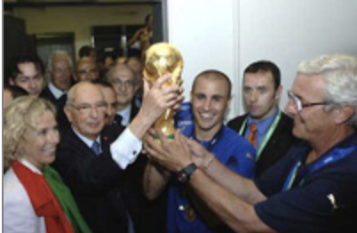

Виды спорта:
футбол
Футбол — командный вид спорта, в котором целью является забить мяч в ворота соперникак ногами или другими частями тела (кроме рук) большее количество раз, чем команда соперника.
Есть 17 официальных правил игры, каждое из которых содержит список оговорок и руководящих принципов. Эти правила предназначены для применения на всех уровнях футбола, хотя есть некоторые изменения для таких групп, как юниоры, взрослые, женщины и люди с ограниченными физическими возможностями. Законы очень часто формулировались в общих чертах, которые позволяют упростить их применения в зависимости от характера игры.